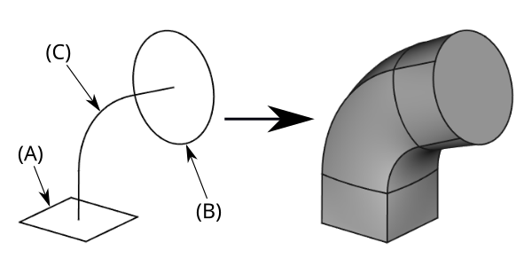

PartDesign AdditivePipe/it
|
|
| Posizione nel menu |
|---|
| Part Design → Crea una funzione additiva → Sweep additivo |
| Ambiente |
| PartDesign |
| Avvio veloce |
| Nessuno |
| Introdotto nella versione |
| 0.17 |
| Vedere anche |
| Loft additivo, Sweep sottrattivo |
Descrizione
Sweep additivo crea un solido nel corpo attivo facendo scorrere uno o più schizzi (detti anche sezioni trasversali) lungo un percorso aperto o chiuso. Se il corpo contiene già delle funzionalità, lo sweep additivo viene unito a queste.
{kind=link}

A sinistra: sezioni trasversali (A) e (B) da far scorrere lungo il percorso (C); a destra lo sweep additivo risultante.
Utilizzo
L'immagine di esempio sopra mostra due diverse forme di sezione trasversale. Il paragrafo seguente descrive la procedura con una sola forma. Ciò consente di ottenere una parte con la stessa sezione trasversale lungo l'intero percorso.
- Creare due schizzi separati;
- uno per il percorso, ad esempio due linee collegate da una curva come nell'immagine sopra,
- uno per la forma della sezione trasversale, ad esempio un cerchio come la prima forma nell'immagine sopra. Invece di uno schizzo può essere utilizzata anche una faccia di un oggetto 3D. (disponibile dalla versione 0.20)
- Disporre correttamente le due forme nello spazio 3D. Si consiglia di posizionare l'origine della sezione trasversale sulla linea del percorso. I due schizzi dovrebbero nella maggior parte dei casi essere ortogonali. Questo si può ottenere con la funzione 'Mappatura dello schizzo' (rendere entrambi gli schizzi visibili con Spazio). Selezionare lo schizzo della sezione trasversale. Selezionare Proprietà/Dati/Map Mode. Fare clic sul pulsante ... a destra. Nella finestra di dialogo Associazione selezionare un vertice dello schizzo del percorso e selezionare la modalità adatta per allineare correttamente i due schizzi.
- Ci sono diversi modi per invocare lo strumento:
- Premere il pulsante
 Sweep additivo.
Sweep additivo. - Selezionare dal menu l'opzione PartDesign → Creare una funzione additiva → Sweep additivo.
- Premere il pulsante
- Nella finestra di dialogo Seleziona associazione selezionare uno schizzo da utilizzare come sezione trasversale e cliccare su OK.
- In alternativa, si può selezionare uno schizzo o una faccia di un oggetto 3D prima di invocare lo strumento (disponibile dalla versione 0.20). In questo caso non si aprirà questa finestra di dialogo.
- In Parametri di sweep sotto Percorso di sweep, cliccare il bottone Oggetto.
- Selezionare lo schizzo da utilizzare come percorso nella vista 3D. In questo caso, l'intero sketch verrà utilizzato come percorso.
- In alternativa, possono essere selezionati i singoli bordi dello schizzo cliccando Aggiungi bordo e selezionando i bordi nella vista 3D. Si noti che è necessario premere il pulsante Aggiungi bordo per ogni nuovo bordo. È necessario selezionare una linea continua senza diramazioni.
- Le altre impostazioni dovrebbero funzionare con i valori predefiniti nella maggior parte dei casi.
- Cliccare OK.
Per utilizzare più di una sezione trasversale, iniziare con il primo schizzo della sezione trasversale come descritto sopra. Quindi in Trasformazione della sezione impostare la modalità di trasformazione su Multisezione, poi premere Aggiungi sezione quindi selezionare uno schizzo nella vista 3D. Ripetere l'operazione per ogni sezione trasversale aggiuntiva.
Opzioni
Corner transition:
- Transformed
- Right corner
- Rounded corner
Trasformazione della sezione:
- Selezionare Costante per usare un singolo profilo
- Selezionare Multisezione per usare più profili
Orientamento della sezione:
- Standard
- Mantiene la forma della sezione trasversale perpendicolare al percorso. Questa è l'impostazione predefinita.
- Fissa
- Orientamento impostato dal primo profilo e costante per tutta la lunghezza. Ciò disattiva l'allineamento al vettore normale del percorso. Di conseguenza la forma della sezione trasversale non ruoterà con il percorso. Provare uno sweep lungo un cerchio per vedere l'effetto.
- Frenet
- Crea la minima rotazione possibile del profilo. Per maggiori informazioni, vedere Frenet-Serret Formulas
- Ausiliario
- Specifica il percorso secondario per guidare lo sweep.
- Per ogni punto P lungo il percorso di sweep, ci sarà un corrispondente punto Q sul percorso ausiliario.
- Man mano che il profilo viene spostato, esso viene trasformato in modo tale che la linea PQ sia la normale del percorso di sweep.
- Se Equivalenza curvilineare viene attivata, allora i punti Q vengono ridimensionati proporzionalmente lungo il percorso dello sweep, indipendentemente dalla sua lunghezza.
- Binormale
- Specifica il vettore binomiale in X, Y e Z
Angolo di transizione
- Trasformato
- Angolo retto
- Angolo arrotondato
Section Transformation:
- Select Constant to use a single profile
- Select Multisection to use multiple profiles
Proprietà
Vedere anche: Editor delle proprietà.
Un oggetto PartDesign AdditivePipe deriva da un oggetto Part Feature ed eredita tutte le sue proprietà. Ha anche le seguenti proprietà aggiuntive:
Dati
Base
- Dati (Hidden)Add Sub Shape (
PartShape): - Dati (Hidden)Base Feature (
Link): - Dati (Hidden)_Body (
LinkHidden):
Part Design
- DatiRefine: true o false. Se impostato a true, pulisce il solido dai bordi residui lasciati dalle funzioni. Vedere Part RefineShape per maggiori dettagli.
Sketch Based
- DatiProfile (
LinkSub): riferimento allo schizzo. - DatiMidplane (
Bool): estrudere simmetricamente allo schizzo della faccia. - DatiReversed (
Bool): direzione di estrusione inversa. - DatiUp To Face (
LinkSub): la faccia su cui la funzione finirà. - DatiAllow Multi Face (
Bool): consentire facce multiple nel profilo.
Sweep
- DatiSections (
LinkSubList): lista le sezioni utilizzate. - DatiSpine (
LinkSub): percorso lungo cui scorrere. - DatiSpine Tangent (
Bool): true o false (default). True per estendere il percorso in modo da includere i bordi tangenti. - Dati (Hidden)Auxiliary Spine (
LinkSub): percorso secondario per orientare lo Sweep. - DatiAuxiliary Spine Tangent (
Bool): true o false (default). True estende il percorso ausiliario per includere i bordi tangenti. - DatiAuxiliary Curvelinear (
Bool): true o false (default). True calcola la normale tra i punti equidistanti su entrambi i percorsi. - DatiMode (
Enumeration): modalità profilo. Le opzioni sono Fixed, Frenet, Auxiliary o Binormal. Vedere Opzioni. - DatiBinormal (
Vector): vettore binormale per la modalità di orientamento corrispondente. - DatiTransition (
Enumeration): modalità di transizione. Le opzioni sono Transformed, Right Corner o Round Corner. - DatiTransformation (
Enumeration): Constant utilizza una singola sezione trasversale. Multisection utilizza due o più sezioni. Linear, S-shape e Interpolation sono attualmente non funzionanti.
Note
- Per controllare meglio la forma dello sweep, si raccomanda che tutte le sezioni trasversali abbiano lo stesso numero di segmenti. Per esempio, per uno sweep tra un rettangolo e un cerchio, il cerchio deve essere suddiviso in 4 archi tra loro collegati.
- È possibile reindirizzare da o verso un singolo vertice da uno schizzo o da un corpo. disponibile dalla versione 0.20
- Quando si seleziona un vertice come sezione, deve essere l'ultima sezione dello sweep. Altrimenti il corpo dello sweep sarebbe composto da due solidi collegati ad un unico punto. Ciò viola la definizione del kernel CAD di un oggetto 3D. È possibile modificare l'ordine delle sezioni trascinandole nell'elenco.
- Il percorso può essere costituito solo da un singolo schizzo, caratteristica o ShapeBinder. Nel caso in cui si desideri scorrere lungo diversi bordi da diversi schizzi, utilizzare un SubShapeBinder.
- Il percorso non deve contenere diramazioni, giunzioni a T ecc. Sono ammessi i percorsi chiusi.
- Possono nascere problemi se la sezione trasversale non è perpendicolare al percorso in 3D.
- Una sezione trasversale non può giacere sullo stesso piano di quella immediatamente prima.
- Le sezioni trasversali non devono contenere percorsi chiusi disuniti o incrociati.
- Se lo schizzo ha una geometria interna, allora l'ordine con cui viene creata la geometria dello schizzo dovrebbe essere lo stesso per tutte le sezioni. Iniziare tutte le sezioni con la geometria interna, o iniziarle tutte con quella esterna. Altrimenti verrà creato uno sweep non valido dove le pareti interne ed esterne si incrociano.
- Helper tools: New Body, New Sketch, Attach Sketch, Edit Sketch, Validate Sketch, Check Geometry, Sub-Shape Binder, Clone
- Modeling tools:
- Additive tools: Pad, Revolution, Additive Loft, Additive Pipe, Additive Helix, Additive Box, Additive Cylinder, Additive Sphere, Additive Cone, Additive Ellipsoid, Additive Torus, Additive Prism, Additive Wedge
- Subtractive tools: Pocket, Hole, Groove, Subtractive Loft, Subtractive Pipe, Subtractive Helix, Subtractive Box, Subtractive Cylinder, Subtractive Sphere, Subtractive Cone, Subtractive Ellipsoid, Subtractive Torus, Subtractive Prism, Subtractive Wedge
- Boolean: Boolean Operation
- Dress-up tools: Fillet, Chamfer, Draft, Thickness
- Transformation tools: Mirror, Linear Pattern, Polar Pattern, Multi-Transform, Scale
- Additional tools: Shape Binder, Involute Gear, Sprocket, Shaft Design Wizard
- Context menu: Suppressed, Set Tip, Move Object To…, Move Feature After…
- Preferences: Preferences, Fine tuning
- Getting started
- Installation: Download, Windows, Linux, Mac, Additional components, Docker, AppImage, Ubuntu Snap
- Basics: About FreeCAD, Interface, Mouse navigation, Selection methods, Object name, Preferences, Workbenches, Document structure, Properties, Help FreeCAD, Donate
- Help: Tutorials, Video tutorials
- Workbenches: Std Base, Assembly, BIM, CAM, Draft, FEM, Inspection, Material, Mesh, OpenSCAD, Part, PartDesign, Points, Reverse Engineering, Robot, Sketcher, Spreadsheet, Surface, TechDraw, Test Framework
- Hubs: User hub, Power users hub, Developer hub